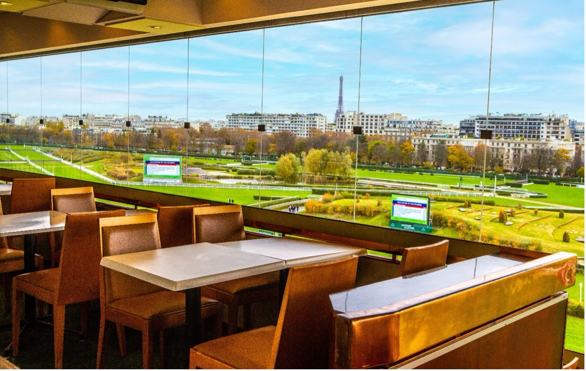

Auteuil se viste de estación de esquí para los 48H de l'Obstacle
El Hippodrome d'Auteuil dedica el fin de semana del 14 y 15 de noviembre a las carreras de obstáculos con una ambientación de montaña y animaciones gratuitas.

France Galop plantea los 48H de l'Obstacle como algo más que una reunión de carreras: durante el sábado 14 y el domingo 15 de noviembre, el recinto parisino adopta el aire de una estación de esquí. La organización habla de «ambiente montañés» y de un programa de animaciones sin coste para el público.
En la pista, el protagonismo es el de siempre. El aficionado podrá ver a los caballos y a sus jockeys en la velocidad, en el franqueo de los obstáculos y en el sprint por la línea de meta. El comunicado menciona grandes premios entre las citas de los dos días, aunque no detalla cuáles ni a qué horas se disputan.
La otra novedad está en la grada. El Restaurante Panorámico de Auteuil, cerrado el resto del tiempo, reabre de forma excepcional durante el fin de semana. Ofrece vistas sobre la pista y un menú de inspiración montañesa al precio de 70 euros. Las plazas son limitadas y hay que reservar.
La convocatoria, en resumen, combina dos planes en un mismo recinto: las carreras de obstáculos y una propuesta de ocio para quien quiera alargar la jornada fuera de la pista. El programa concreto de pruebas y las condiciones de acceso no figuran en el comunicado de France Galop.
Por Martín Larrañeta